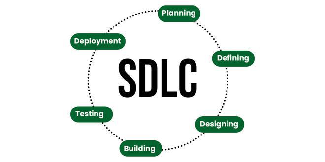
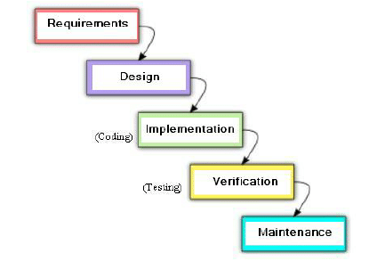
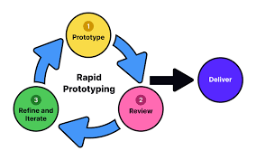
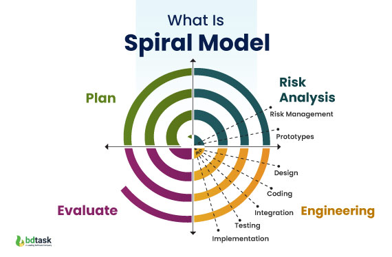
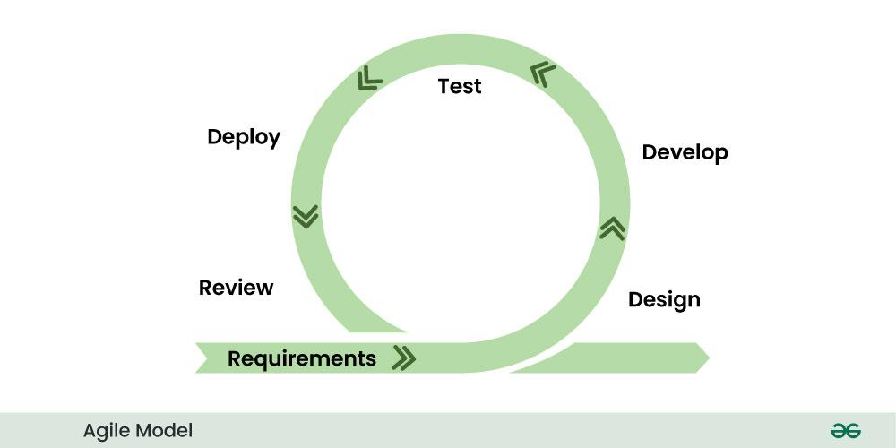
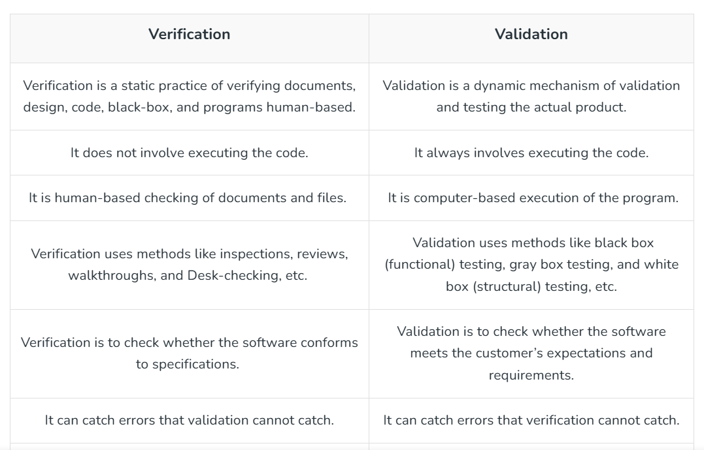
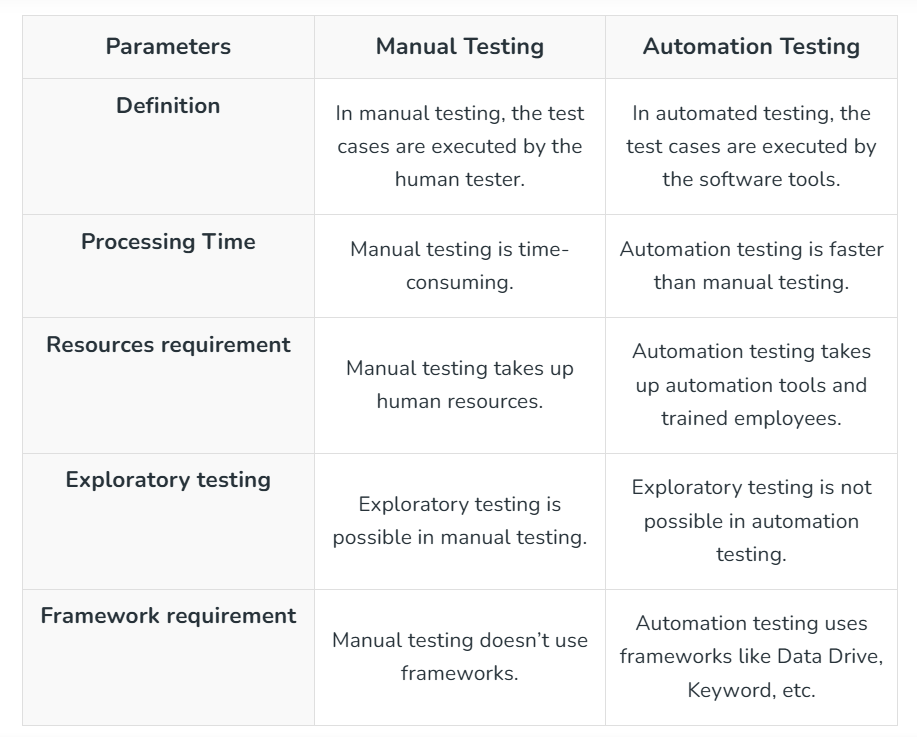
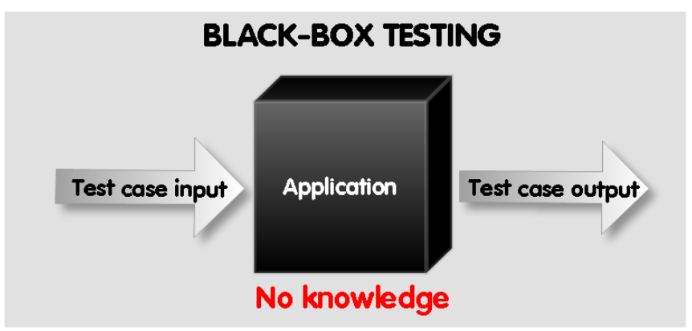
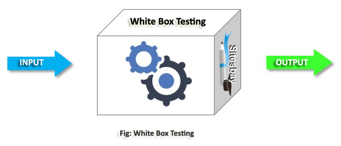
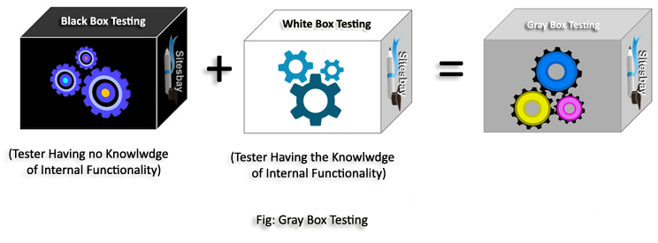

answer: The Software Development Life Cycle (SDLC) is a structured process that guides the development of software applications through several key phases:
planning is the first step, where project goals, scope, resources, and timelines are established. This phase ensures alignment with stakeholder expectations and identifies potential risks.
In the Requirements Gathering and Analysis phase, detailed functional and non-functional requirements are collected from stakeholders. This documentation provides a clear understanding of what the software needs to achieve.
Next is the Design phase, where the requirements are transformed into technical specifications. Designers create architecture, data models, and user interfaces, ensuring that the design meets user needs.
The Implementation phase involves coding the software based on the design specifications. Developers write the code and conduct unit tests to verify the functionality of individual components.
After implementation, the software enters the Testing phase, where various testing methods identify and fix defects. This ensures that the software meets all requirements and performs reliably.
Once tested, the software is moved to the Deployment phase, where it is released to users. This phase includes installation and training to ensure effective use.
Following deployment is the Maintenance phase, where the software is monitored for issues, updates, and enhancements based on user feedback. Continuous maintenance ensures ongoing functionality and user satisfaction.
Lastly, an optional Evaluation phase reviews the project to assess its success and gather lessons learned for future improvements. Each phase of the SDLC is interconnected, contributing to the effective development and delivery of high-quality software applications.

Answer:Software development models guide the structured approach teams take during the software development lifecycle (SDLC) to plan, create, test, and deploy software effectively. Here’s a concise overview of each commonly used software development model:
Waterfall Model
The Waterfall Model is a linear approach where each SDLC phase (planning, design, implementation, testing, deployment, and maintenance) follows sequentially. Once a phase is completed, it doesn’t return to previous steps. This model is suitable for projects with well-defined requirements and a fixed scope, as changes are challenging to incorporate once the process starts.

Iterative Model
In the Iterative Model, the project is developed in small, manageable iterations. Each iteration includes a subset of requirements and goes through design, coding, and testing. New features and improvements are added in subsequent iterations, allowing for feedback and refinement as the project progresses.

Spiral Model
The Spiral Model combines elements of both iterative and waterfall approaches, adding a strong focus on risk analysis. Each phase (or “spiral”) includes planning, risk assessment, development, and evaluation. It’s ideal for large, high-risk projects, as risks are continuously assessed and mitigated with each cycle.

Agile Model
The Agile Model promotes flexibility and customer collaboration. It consists of short development cycles called "sprints," allowing for regular feedback, quick adaptations to changes, and incremental development. Agile is best for projects with dynamic requirements and encourages continuous improvement and rapid delivery.

Answer:
The Feasibility Study in Software Engineering is a study that analyze whether a proposed software project is practical or not. It early detects the potential issues, analyzes technological possibilities, and determines the project’s financial and operational viability. This decreases the chance of project failure that also save time and money.
Answer: A use case diagram is a behavior diagram and visualizes the observable interactions between actors and the system under development. The diagram consists of the system, the related use cases, and actors and relates these to each other:
System: What is being described?
Actor: Who is using the system?
Use Case: What are the actors doing?

Answer:Cohesion and coupling are important concepts in software engineering, particularly in the context of object-oriented design, as they affect the structure, readability, maintainability, and robustness of code.
Cohesion
Measures how closely related the tasks within a module or class are. High cohesion means a module does one focused job, making it easier to understand and maintain.
High Cohesion: Modules/classes have a single, well-defined purpose.
Low Cohesion: Modules/classes handle unrelated tasks, leading to complexity.
Coupling:
Measures the dependency between modules or classes. Low coupling means modules can function independently, making changes less likely to impact other parts.
Low Coupling: Modules/classes interact minimally, promoting flexibility.
High Coupling: Modules/classes rely heavily on each other, which complicates modifications and testing.
Goal: Aim for high cohesion (focused tasks) and low coupling (independent modules) to improve code quality and maintainability.

Answer: Black Box Testing: Focuses on testing the functionality without looking at the internal code structure. Testers only interact with the user interface, verifying if the system behaves as expected.

White Box Testing: Involves testing the internal structure, logic, and code of the application. It’s usually performed by developers to ensure code correctness and coverage.

Gray Box Testing It is a hybrid testing approach that combines aspects of both black box and white box testing. In gray box testing, the tester has partial knowledge of the internal workings of the application, typically including knowledge of high-level design or algorithms but not complete access to the source code. This method allows testers to create more effective test cases by understanding some internal processes while still focusing on functionality and user experience.

Unit Testing: Tests individual components or modules of an application to verify they work independently. It’s often the first stage of testing, usually conducted by developers.
Integration Testing: Tests the interactions between different modules or components to identify issues in how they work together.
Acceptance Testing: Ensures the software meets the business requirements and user needs. It includes:
Alpha Testing: Performed internally by the development and QA teams before release.
Beta Testing: Conducted by a limited set of external users in a real-world environment.
KEEP GOING!! JUST ONE LAST STEP..